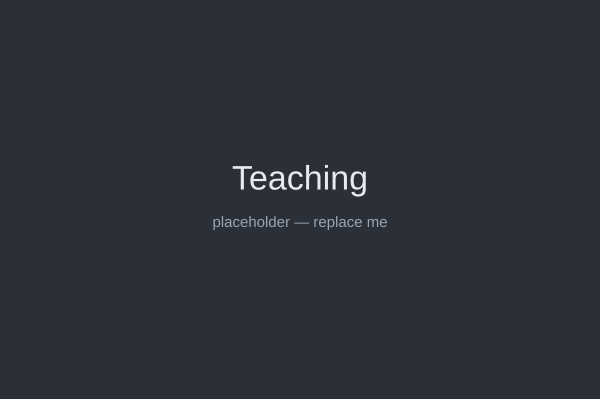

What I've been paid to do at the Hello Maker Studio — teaching, training, and making.
Overview
I’ve been drawn to hands-on projects for as long as I can remember, but things really clicked once I reached high school and gained access to a machine shop and 3D printers. That was when making became less of a hobby and more of a way of thinking. Everything you see across this site is a result of that mindset.
That same curiosity led me to take UGS 303: Scientific Innovation during my second semester as a freshman. The course is taught largely in a makerspace, with a strong emphasis on developing functional products. I spent far more time than required on my project, which led to close collaboration with the professor and teaching assistants. They encouraged me to return the following semester as a volunteer, and I’ve been a paid Maker/Mentor ever since, spending more time in the space than I probably care to admit.
While much of what’s shown here focuses on the training and teaching side of my role, that’s only part of the job. I also collaborate with researchers across the College of Natural Sciences to design and prototype hardware, work with another on-campus makerspace to improve 3D printer filament recycling, and spent a summer mentoring high school students as they developed assistive technologies and research-driven engineering solutions.
At its core, my job lives at the intersection of teaching, making, and problem-solving, which is exactly where I want to be.
Below you'll find links to every major aspect of my job at the Hello Maker Studio!.
